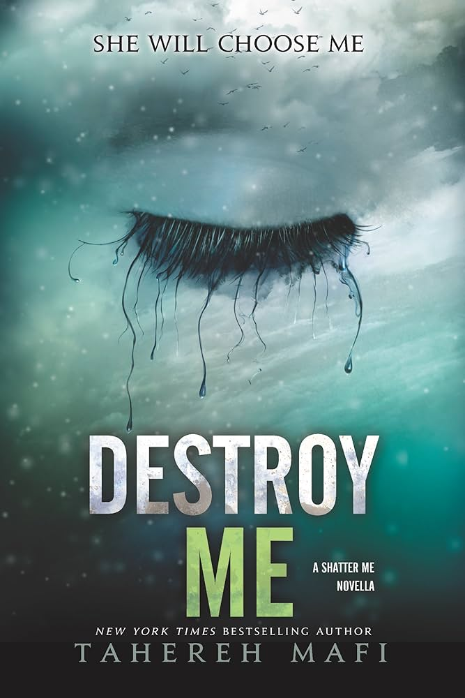
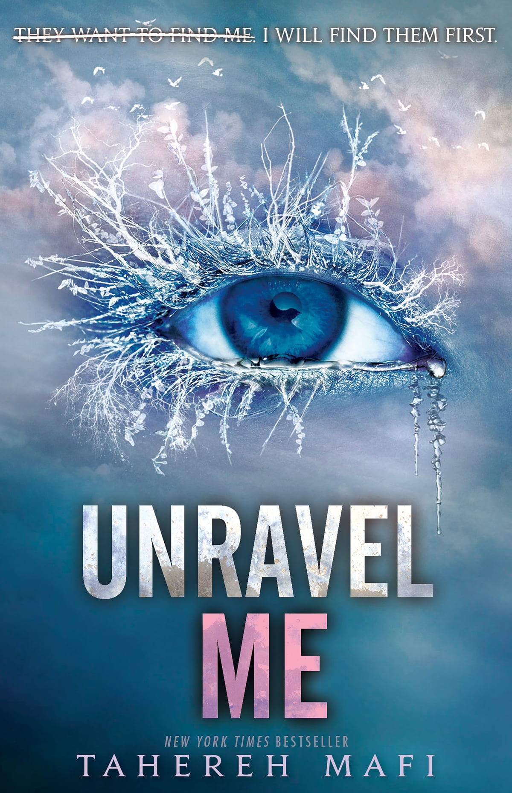
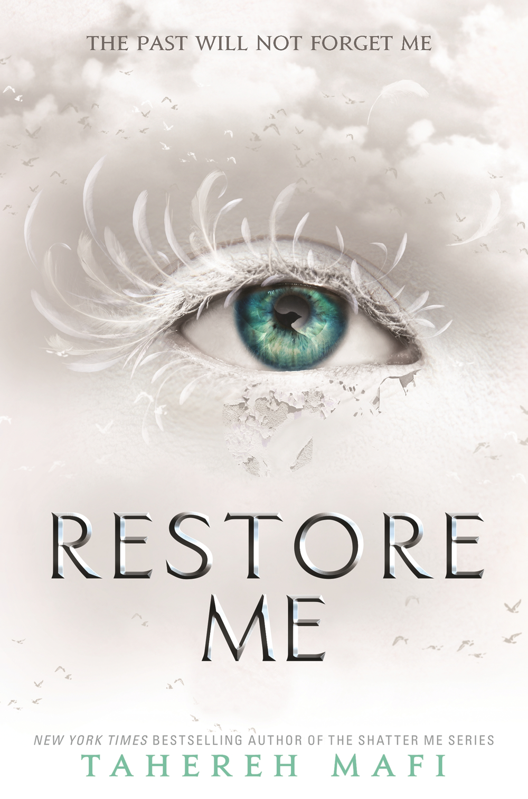
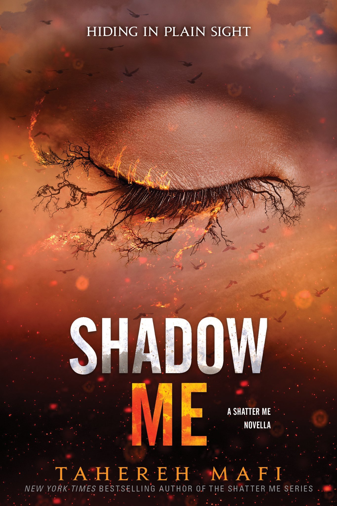
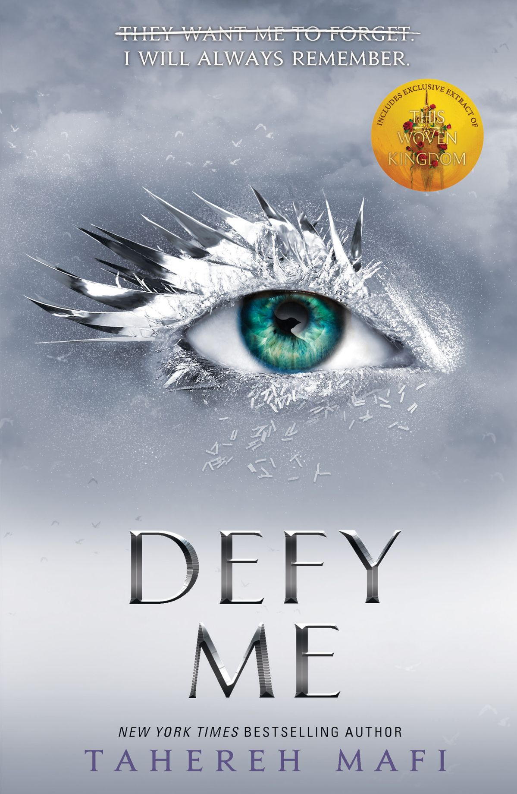
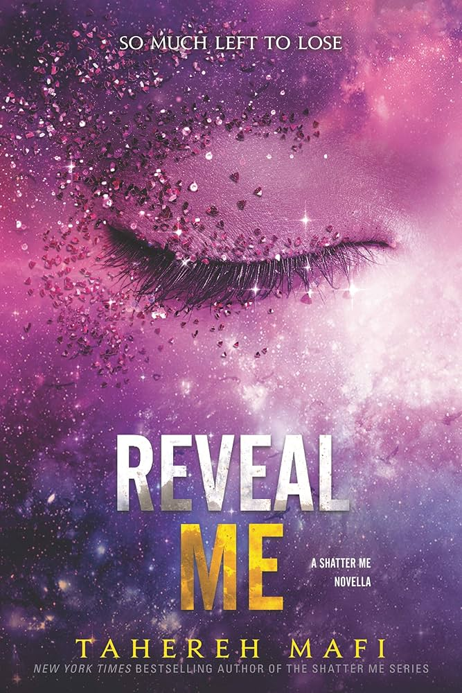
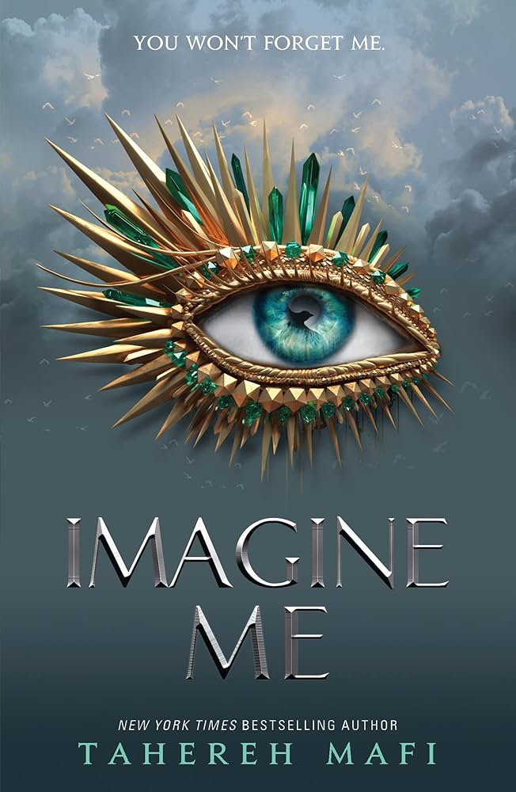

Emma's Book Reviews
The Only Opinion That Matters
Shatter Me

˗ˏˋ ★ ★ ★ ˎˊ˗
This book is pretty good for a young adult who wants a good fantasy book with some romance as well. It wasn't my favourite but it was still engaging and interesting in the moment and I LOVE Aaron Warner Anderson.
The book starts off with Juliette in solitary confinement for 264 days. I found this a bit boring and hard to get through as it wasn't that hooking. It was a bit sad to see how long she had been locked away for so long.
At first I found Adam annoying and I didn't like him since he stole her bedding and was kind of annoying. When he arrived I wanted to know why no one could touch Juliette and what was happening there. I found Juliette to be an interesting character and Adam just seemed like a macho army guy.
When we were first introduced to Warner I thought he was a bit of a psycho. He was very obsessed with Juliette and I thought he was going to be the villain in the story. He seemed like he was open for some good character development though.
I was very surprised when it was revealed that Adam was immune to her touch. This just made me more curious about what was happening and why she was like that. I thought that the confrontation with Warner and him being able to touch her was very perplexing.
My favourite part was the introduction to Omega Point. I thought it was a great introduction and made me very interested in what it was and what its significance was.
Overall I enjoyed this book and found it to be quite easy to follow and read. It's not my favourite but I would definitely recommend it to young people who want to get back into reading.
Write a Review
Destroy Me

˗ˏˋ ★ ★ ★ ★ ˎˊ˗
I liked this book as I thought Warner's point of view was really interesting. I thought the character in this book was very well written and it was a nice short read.
I thought it was interesting how delusional Warner was about Juliette. He was so obsessed with her and it was kind of funny to read. I thought it was kind of weird and a next level of delusion when he thought that Juliette chose him when she shot him.
I found his relationship with his dad quite interesting and I thought it added more depth and layers to his character. I feel like it gave us more insight into him and what his childhood was like.
I also found his point of view to be a bit more interesting as it showed more depth into his character and gave us insight into what he was thinking. I really liked when he was reading Juliette's journal because it also gave me some more backstory on Juliette's character.
I also found his resolve quite interesting as he no longer thought that Juilette was a weapon he could use for the establishment but that he and Juliette were destined to be together and that she could pull him out of his darkness.
Overall I think this was a really good novella. It was a nice short read and gave us a lot more insight into Warner and what drives him.
Write a Review
Unravel Me

˗ˏˋ ★ ★ ★ ★ ˎˊ˗
Overall I quite liked this book and thought it was a great continuation from Shatter Me. I enjoyed Juliette's development throughout the book. The characters and plot were written nicely so it was quite easy to follow. This book was better than the first one and hooked me a lot more.
I really liked the start being at Omega Point and focusing on Juliette and the reasoning for her powers. I thought that she and Adam were quite cute together and that Kenji was a nice comedic break up. I liked how it was found out that Adam being able to touch her was actually killing him because it was a good plot twist that I didn't expect. I also liked how we found out that Juliette wasn't the only one with powers and learnt some more about that.
I thought the return of Warner was written very well. My favourite part was when he was captured in Omega Point and talked more to Juliete. I found myself liking Warner a lot more than Adam since we could see more depth and backstory to Warner's character. I thought Juliette and Warners chemistry was great and I loved reading their scenes together.
I liked the dramatic twist of the return of Supreme Commander Anderson and the revelation that Adam is Anderson's son was not expected at all. I thought it was a great twist that was written very well.
I really liked the final battle as I thought it was written with just enough suspense that it kept me on the edge of my seat. I really liked the development of Juliette's powers and thought that it was a very good plot point.
I liked how Mafi developed Warner's character even more in the last chapter. I liked how she showed that he cared a lot about Juliette and had Juliette see him in a different way. I also like how the book ended with some uncertainty and thought it led really nicely into the next one.
Write a Review
Fracture Me

˗ˏˋ ★ ★ ★ ˎˊ˗
I thought this book was a nice short read and gave us some more insight into Adam Kents character. I think the series could've been fine without it but it was good nonetheless.
I liked how it showed the aftermath of Omega Point and Adam's feelings on it since it showed that he was more than a soldier. I liked how it showed that his priority was on James and finding him as it showed that he was extremely loyal to his family.
My favourite part was when Juliette was captured and it showed his conflict between helping James and Juliette. I feel he was extremely justified when he went to help his younger brother as Juliette was capable of protecting herself. I also thought this gave the audience a lot more insight into Adam's priorities and loyalty to his family.
I liked how it also gave some more insight into his and Juliette's relationship as it showed that it would probably not work out. I think that Adam was looking for some timid girl who he could protect and he was not able to do that with Juliette.
Overall I think this was a good novella that showed us a lot more of Adam's character but if this wasn't in the series I wouldn't be mad.
Write a Review
Ignite Me

˗ˏˋ ★ ★ ★ ★ ˎˊ˗
I thought this book was the best in the series and I really enjoyed it. It developed the characters really nicely and gave some good plot twists. My favourite part was how Tahereh Mafi developed Warner and Juliette's relationship and characters.
I liked how it showed Juliette's recovery from her near fatal gunshot wound and how Warner was there for her the whole time. I like how Mafi developed their characters during this time as I thought they had a lot of chemistry and were really good together.
I also liked how it showed the deterioration of Juliette and Adams relationship as I thought Adam had become an unbearable character to deal with. He was jealous and bitter and handled the situation in an extremely childish way. I also loved how Warner was there for her. The pager scene was perfect.
I loved how it showed Juliette's power growing even more. I think this was great development for her character and I love the way she got more confident as her power growed. I did think that Castle would've made a better leader of the rebellion and she should've just been a cover person but it did show that she was trying to take control and get revenge from those who've wronged her.
The ending was great as I was very glad that Anderson finally died. I did however think that Juliette did not deserve to be leader and that Castle would've made a better one because she is a teenager and inexperienced with all the politics.
Overall this book was very good and I'd probably say it was the best in the series. I enjoyed the character development but I do wish there were some different decisions made plot wise.
Write a Review
Restore Me

˗ˏˋ ★ ★ ★ ˎˊ˗
I thought this book was fine. It wasn't the best and it wasn't the worst. It was just fine. I feel the series kind of slowed down and got a bit boring after this book. It would be good for young readers as it was easy to follow but it just wasn't for me.
I feel like the book starting with Juliette struggling as supreme commander was not surprising as she had no experience and didn't really deserve to be in it in my opinion. She had no political experience and had been in an insane asylum for nearly a year prior. This meant she was disconnected from what was happening and she really did not understand running anything.
I liked the addition of the other Supreme Commanders children as I thought it was interesting to learn more about the world. I don't love how the introduction went as I thought that Warner keeping that secret was just annoying and unnecessary.
I liked the plot twist about Emmaline and Juliette's real past. I liked how she was actually a Supreme Commander's daughter as I thought it was an amazing plot twist that I never saw coming. My favourite part was finding out that Warner and Juliette actually knew each other and had their memories erased. I thought these plot twists were very creative and they kept me interested in the book.
I also really loved Kenji and Juliette's friendship as it was a nice comedic break from the politics and it showed more of Juliette's real side.
I also liked the dual povs of Juliette and Warner. It gave some great insight into both their characters and their thoughts.
The ending was kind of confusing as I didn't understand why Juliette couldn't trust anyone and I was confused about Emmaline's part in the storyline.
Overall this book was okay. I feel as if it slowed down from the pace of the other books and was not as interesting. It was fine and still kind of kept me entertained.
Write a Review
Shadow Me

˗ˏˋ ★ ★ ★ ★ ˎˊ˗
I liked this novella as it gave us more insight into the character of Kenji. He is a nicely written character and has great comedic qualities that broke up all the politics.
I liked how it showed Kenji's emotions with the chaos of Juliette rising to power. I liked how it showed that he uses humour to deflect his pain as it gave some more depth into his character.
I liked how it showed his conflicting feelings about Warner and how he cares for Juliette as a friend. I thought it added more development to their friendship and was quite cute. I liked how he showed he was protective over the people he cared about and how he was just trying to do his best.
I also liked how it showed more perspectives of Omega Points fall and Juliette's kidnapping. It gave me more insight into what happened and I really liked Kenji's point of view.
I also loved seeing Kenji and Nazeera's bond as it showed more of him and his emotional feelings. It showed that he can be serious and it developed his character a lot.
My favourite part was how it left off on a cliffhanger and set up for Defy Me very well.
Overall I think this was one of the best novellas and a lot better than the previous book.
Write a Review
Defy Me

˗ˏˋ ★ ★ ★ ˎˊ˗
This book was okay. It was a bit hard to follow at times as there were a lot of twists. It was not that memorable and I think this series could've ended at Ignite Me as these books have lost the momentum.
The book starts with Anderson alive again and more shocking revelations about Juliette and Aaron. I didn't expect the one about Aaron and Juliette and I thought that was a good twist.
I liked reading Aaron's point of view as it was very interesting. I liked seeing his development as he learned to work with the rest of Omega Point.
My favourite part was Kenji's chapters as I really liked his character in this book and I especially enjoyed watching his relationship develop with Nazeera. I liked how Nazeera talked more about her past and what it was like to grow up as the Supreme Commander as a parent.
I liked the role of Emmaline in this book as she was used in a way to help Juliette and to develop the idea of the Reestablishment. I liked Juliette and Emmaline's bond and the way they were able to communicate. I did feel bad for Emmaline as she was just used as a weapon to help fuel the Reestablishment. She sacrificed her whole life and just wanted to be put out of her misery.
I thought Aaron and Juliette's reunion was okay. It wasn't too interesting but I was glad she was free. I thought it was cute but also a bit too boring and forgettable. I like their relationship a lot but the book was just a bit boring and not really my cup of tea.
I liked Emmaline's sacrifice as it was quite sad. Her powers had turned volatile and in a devastating turn of events she uses the last of her strength to free Juliette from the reestablishment. I did like the part of her sacrificing her life for her sister. I felt that was a good ending for her as she wanted to die and she did it well helping her sister.
I thought the ending was fine. Nothing too interesting about it. I can barely even remember it because it just was not memorable.
Overall this book was okay. It was a fine ending and was not the best or the worst. It was a fine ending to a fine book series. I think if you were looking for an easy beginner read then this is pretty good.
Write a Review
Reveal Me

˗ˏˋ ★ ★ ★ ★ ˎˊ˗
I liked this book as it wrapped up Kenji's story and showed his deeper emotions. It was cool to see his true emotions under his funny attitude.
I liked seeing Kenji's point of view of the aftermath of Defy Me as it showed that things were not perfect. I feel as though most books end and everything is perfect and that is a bit unrealistic.
I liked seeing the emotional turmoil that he was experiencing as it added even more depth and layer to his character. I liked seeing his uncertainty because it showed that not everything was perfect and there were things going wrong which would happen realistically.
I liked seeing his conflict and how he was unsure about Juliette. This showed that her character had developed and that their friendship had to develop with it. I enjoyed seeing Warner's character develop a closer friendship with Kenji and show that he had improved since meeting Juliette.
I also liked seeing Nazeera and Kenji's relationship. Kenji is such a good character and so is Nazeera. They both deserved good endings and they are great together. I like how we saw more of Nazeera and learnt even more about her past. I also loved how even though they had flirtatious banter they were developing a more serious relationship.
I also liked seeing the aftermath of Emmaline's death and how it affected everyone.
I liked to see the feelings before the final stand against the reestablishment and saw that Kenji was nervous for his friends and the people he cares about.
Overall this novella was pretty good and I really enjoyed reading more from Kenji's point of view. I liked watching Kenji's self discovery and the way he evolved through this book. I think Kenji's novellas might be some of the best books in the series.
Write a Review
Imagine Me

˗ˏˋ ★ ★ ★ ★ ˎˊ˗
I thought this was a good ending to the series as it wrapped up everything but it wasn't my favourite I have read. It was interesting in the moment but now it isn't as good.
I think it was a good part of the plot when Juliette was being controlled by Anderson. I thought that it was quite a good part of the plot as it was quite interesting.
I liked seeing Warner's determination to save Juliette as their relationship was my favourite part of the books.
I also really liked Kenji and Nazeera's relationship because they were so cute together and they helped as a break from Juliette and Aaron. I liked how their relationship got even deeper and their emotional connection developed to another level.
The most confusing part was Emmaline because I thought that she had died but then it turned out that she was alive but frail. Emmaline's whole plot just confused me and got very jumbled in my head. Maybe that was my fault but I just found it a bit confusing to follow. Though in the end Emmaline ends up sacrificing herself again for Juliette. I'm glad she finally got her ending and she did it in such a good way. I also liked how it symbolised an act of love between the two sisters.
I like how after Emmaline's sacrifice Juliette reclaims her identity as Ella while also balancing the parts of Juliette in her. Juliette's self acceptance seemed to be a turning point in the novel and helped her take down Anderson in the end
Then there was the ending battle which the whole series had been leading up to. With Emmaline dead and Juliette/Ella finally having accepted her identity all that needed to be done was destroy the Reestablishment. I thought that it was quite action packed and I quite liked it. I really liked how Juliette was the one to face Anderson. I liked Anderson's demise and the end of the Reestablishment.
I thought that in the aftermath the main focus should have been everyone settling but it was mainly about Aaron and Juliette/Ella. I wish it also focused a little bit more on Kenji and Nazeera.
Overall I thought this book series was very nice and entertaining at the moment but could've been more interesting in some parts. It would be very good for new readers who want something to introduce them to world building book series.
Write a Review